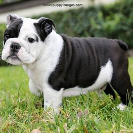

-Los Bulldogs ingleses son conocidos por ser valientes, tranquilos y amorosos.
-Son perros afectuosos que disfrutan pasar tiempo con su familia humana.
-Aunque pueden parecer perezosos, también pueden ser juguetones y disfrutar de actividades moderadas.
 Utilidad:
Utilidad: -Los Bulldogs ingleses son excelentes compañeros para vivir en interiores, ideales para familias y personas mayores.
-Su temperamento calmado los hace adecuados para entornos urbanos o apartamentos.
Cuidado y Mantenimiento:
-Tienen arrugas faciales que necesitan limpieza regular para prevenir infecciones.
-Necesitan ejercicio moderado y son sensibles a temperaturas extremas debido a su morfología braquicéfala.
Tamaño:
-Los Bulldogs ingleses suelen pesar entre 40 y 50 libras.
-Son perros de tamaño mediano, con una altura que varía entre 14 y 15 pulgadas.
-Tienen una cabeza grande y cuadrada, con arrugas prominentes y mandíbulas fuertes.
Imagen:
